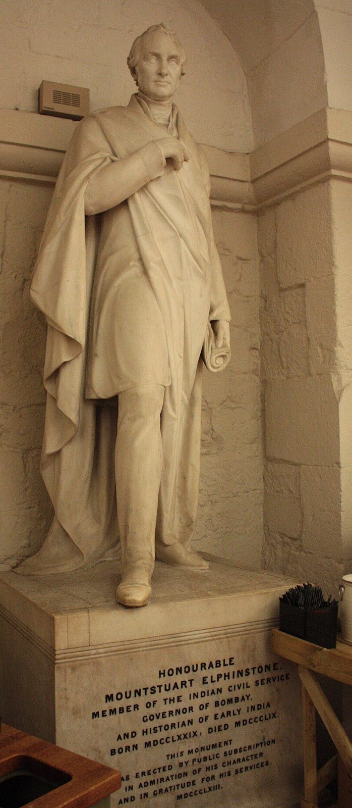

Elphinstone’s Report
The Commissioner of the Deccan described the Peshwa’s government as he found it and argued for keeping much of it, for the moment, intact.

Mountstuart Elphinstone, Resident at Pune from 1811 and Commissioner of the Deccan from 1818, submitted his Report on the Territories Conquered from the Paishwa to the Supreme Government on 25 October 1819, shortly before leaving to become Governor of Bombay. It runs to some hundred printed pages and is the fullest contemporary description of how the Maratha state worked at the level of the district and the village: the mamlatdar and his establishment, the hereditary deshmukh and deshpande, the patil and kulkarni, the village panchayat, the Hindu law as administered by shastris, and the revenue system of fixed village assessments and farming that Nana Phadnavis had maintained and Bajirao II had let decay.
Elphinstone’s recommendations were cautious. He thought the Peshwa’s system, though corrupt in its last years, was adapted to the country and understood by the people, and that sudden change would do harm. He proposed retaining the mamlatdars and the village officers, keeping panchayats for civil disputes, codifying rather than replacing Hindu law, and settling the revenue at moderate rates on the basis of existing village records, with a survey to follow. He was sceptical of the ryotwari settlement of Madras, which assessed each cultivator separately, and warned against the class of English collectors who would sweep away every intermediate authority. The reserved jagirs of chiefs who had submitted were to be confirmed.
The report set the tone for the Deccan’s first decade under the Company. Its successors did not all share its patience. Within a few years the collectors were pressing for detailed field surveys and individual assessments, and R. K. Pringle’s survey of the 1820s moved the Deccan toward ryotwari on principles Elphinstone had mistrusted.
In the story
The Report is a conqueror’s inventory of the sovereignties it had displaced. Elphinstone recorded, with care, the layers that had accumulated under sultanate, Mughal and Maratha rule: hereditary district officers with rights older than any state, village bodies, jagirdars, sardars. His instinct was to leave them standing under a Company roof. That the roof was now the Company’s was never in question. The document shows paramountcy at its most conservative, and shows why even conservative paramountcy ends the plurality it describes.
In the map collection
Vandermaelen, Bejapoor – Asie 102 (1827)
In the chronology
- 25 October 1819Elphinstone’s report on the conquered territories frames early Bombay policy toward village institutions, hereditary officers, revenue and law.
Sources
- Mountstuart Elphinstone, Report on the Territories Conquered from the Paishwa (Government Gazette Press, Calcutta, 1821)
- Kenneth Ballhatchet, Social Policy and Social Change in Western India, 1817–1830 (Oxford University Press, London, 1957)
- Ravinder Kumar, Western India in the Nineteenth Century: A Study in the Social History of Maharashtra (Routledge and Kegan Paul, London, 1968)